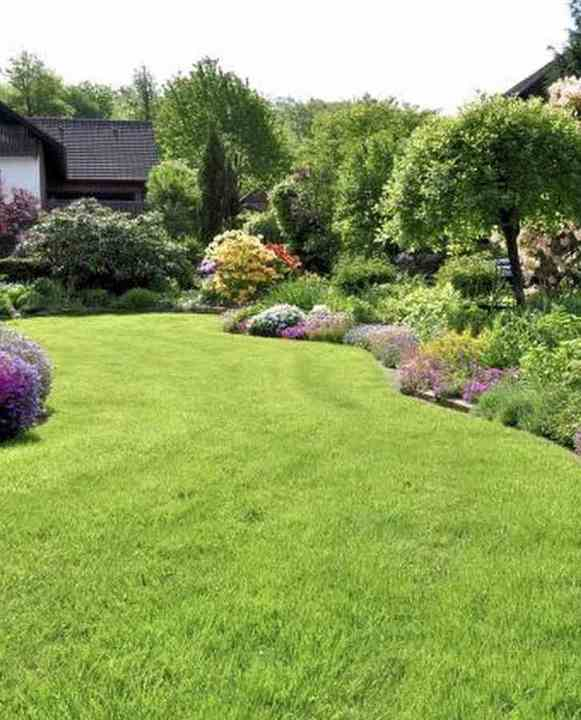
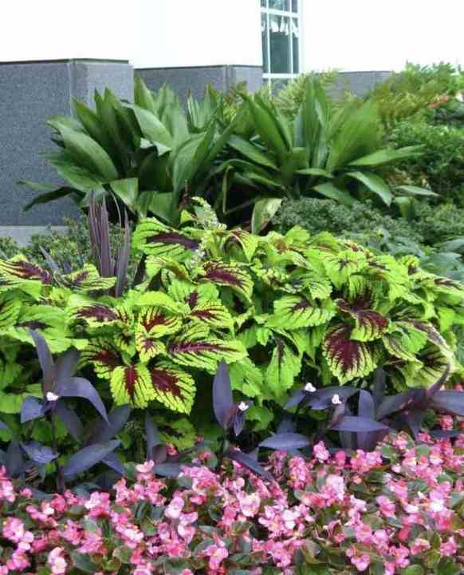

Work
The grounds, as photographed.
Filter by the kind of view. Captions stay inside what the picture shows.

Sweeping lawn and mixed borderResidential Striped residential lawnResidential
Striped residential lawnResidential Estate entry plantingEstate
Estate entry plantingEstate Stone terrace and dayliliesEstate
Stone terrace and dayliliesEstate Layered perennial bedsPlanting
Layered perennial bedsPlanting
Seasonal color bedPlanting Front-entry borderResidential
Front-entry borderResidential Commercial turfCommercial
Commercial turfCommercial- Covered outdoor livingEstate
 Foundation bed and lawnResidential
Foundation bed and lawnResidential